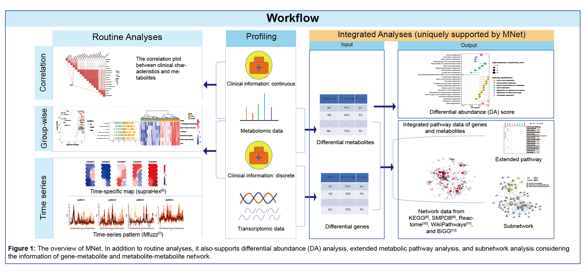

Chapter 2 Quick Start
In this chapter, we will describe the three main functionalities of MNet and present the quick-start code template of MNet workflow. The data in this chapter are included in the MNet package. And through this chapter, you will learn:
- The workflow of MNet.
- The installation of MNet
- A quick-start code template of MNet workflow.
- And for the detailed version and advanced application of MNet, please read Chapter 3 and Chapter 4.
2.1 Overview of Workflow
The package is designed to provide a collection of functionalities aiding in metabolome data interpretation together with clinical data and gene expression data. It not only supports the routine analyses and visualisations in terms of metabolomic datasets (including but not limited to: differential metabolites analyses/visualisations/feature selection), the differential abundance analyses which is designed to detect which pathways are differentially abundant between two conditions, but also is capable of carrying out integrated analysis of metabolic and clinical data (such as ggcor package), integrated analysis of metabolic and gene expression data (the metabolite and gene pathway analyses and the subnetwork analyses of metabolite-gene network analyses). Also supported is the time series analysis with the help of other packages (mFuzz package and supraHex package).

2.2 Installation
The MNet R package requires R version 4.0.0 or higher, please see https://cran.r-project.org. ggcor and XGR are from GitHub. Hence, it is recommended to install the package before installing MNet. Please install it via github.
if(!require(devtools)){
install.packages("devtools")
}
devtools::install_github("Github-Yilei/ggcor")
devtools::install_github("hfang-bristol/XGR")MNet is available for all operating systems and can be installed via the Github.
devtools::install_github("tuantuangui/MNet")
library(MNet)check the package ‘MNet’ successfully installed
library(help=MNet)